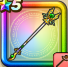

聖風のつえ
攻略班 8.0点 / キアリーキアリクバギクロス天使のうたごえベホマラー※錬成で強化可能
くわしい特徴
【レベル別習得スキル】 Lv1【賢者】かいふく魔力+5 Lv1キアリー（消費MP：5）仲間ひとりの毒・猛毒をなおす Lv10キアリク（消費MP：10）仲間全員の麻痺をなおす Lv15バギクロス（消費MP：21）敵全体にバギ属性の呪文中ダメージを与える Lv20天使のうたごえ（消費MP：25）仲間ひとりをHP50％で復活させる Lv30ベホマラー（消費MP：47）呪文で仲間全員のHPを回復する Lv35戦闘終了時にMPを10回復する Lv40バギクロスのダメージ+20% Lv45さいだいMP+12 Lv50かいふく魔力+12錬成スキル改1じゅもんHP回復効果+5%改2ベホマラー改（消費MP：58）呪文で仲間全員のHPを回復し、さらにブレスダメージを軽減する改3バギクロスの威力+700%改4錬成ぶき特別演出解放・メガモン討伐結果発表時に特別演出が追加・武器の見た目に特別なエフェクトが追加 【限界突破スキル】 1凸じゅもんHP回復効果+5% 2凸ターン開始時MPを1回復する 3凸じゅもんHP回復効果+5% 4凸ターン開始時MPを1回復する